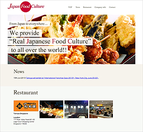
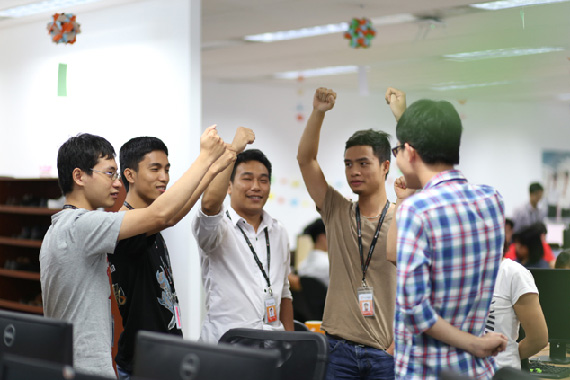

ウェブマーケティング界の注目企業、Basicがオフショア開発を選んだ理由とは？
アジアで優秀な人材のチームを作る
株式会社ベーシック・ Webマーケティング事業部、 稲船氏、 斎藤氏インタビュー

国内で27万人以上ものマーケッターが登録するferretでお馴染みのウェブマーケティング会社、株式会社Basic。2015年4月、新たにウェブサイトの課題をオールイワンで「見える・直せる・使える」 サービス「 Homeup! 」をローンチ。フランジアでは、 Homeup! の開発を9名のラボチームでお手伝いさせていただいております。今回のオフショア開発についてお話を伺いました。
稲船 祐介氏
Webマーケティング事業部 マネージャー
業務系アプリケーションや物流システムのUIエンジニアから、ウェブ制作会社のディレクターに転身し5年のキャリアを積んだのち、企画制作部の部長を務める。現在は株式会社ベーシックに在籍し、ウェブマーケティングツール「Homeup!」のプロダクトマネージャーとして開発から制作・運用フェーズまで幅広く担当。
斎藤 幸士氏
Webマーケティング事業部開発責任者 開発2部 部長
情報通信系研究所でプログラマとして勤務の後、独立行政法人情報処理推進機構の突出したIT人材を発掘・育成する「未踏ソフトウェア創造事業」に採択。スタートアップの立ち上げを経て株式会社ベーシックに入社、現在に至る。
稲船：Basicはひとことで言うとウェブマーケティングの会社です。お客様が困っていることや課題を、様々なビジネスの中で培われてきたウェブマーケティングのノウハウで解決することをしています。
サービスの一つであるferretは、現在はメディアになっていますが、前身はWebサイトを作る際のターゲット決めで使うキーワードを探すためのツールやサイトの順位などを自動で取ってくるツールを無料で提供するサービスをやっていました。
それ以外にもスマホアプリ事業やフランチャイズ事業、iPhoneケースを作る事業などがありますが、色々な課題に対してそれがウェブマーケティングによって解決できるのであれば事業にしてサービス化しているので事業展開が多岐に渡っています。一見やっていることがバラバラに見えますけど、基本的にはウェブマーケティングで課題を解決するのがBasicの軸です。
斎藤：僕たちのいるウェブマーケティング事業部も、元はferretを運営しているからferret事業部だったんです。ferretは、ウェブマーケティングが一から学べるメディアとして、マーケティングのメソッドを体系化したカリキュラムとマーケティングの日々のニュースを編集して配信しています。それとBasicが今まで培ってきた事例を数字なども載せた状態で提供しています。
そしてその先にあるのがHomeup!です。ウェブマーケティングを学んだあと、実践できる環境も必要ですよね。ウェブマーケティングをやる時は、Googleアナリティクスをサイトに設置して解析結果を見ながらサイトを改善していきます。Homeup!はそれをオールインワンで提供しているので、最初から解析ツールも入っているし、ダッシュボードを見ればどこを直せばいいか、どこに問題があるかということが一目でわかります。ferretで学んだウェブマーケティングの知識をHomeup!で実践するという流れをつくっているっていう感じですね。
Homeup!の特徴
WEBマーケティングに関する最新ニュースや役立つツール＆サービスの紹介までをワンストップで提供するポータルサイト
スマホケースを1000種類以上の選べるスマホケースブランド「phocase」

ASEANでのうどん屋のフランチャイズ展開を皮切りに日本食を輸出産業として世界に広げることを目標に掲げるJapan Food Culture
ホームページの課題が見える・直せる・使える「Homeup!」
稲船：構想自体は2年以上前ですね。ウェブマーケティングをより簡単にできるように、誰でもウェブマーケティングをできるようにする構想があって、ただそれに至るまでにはやらなければいけないことも多かったので、リリースしたのは2015年4月なので満を持してっていう状況です。
斎藤：今までのウェブマーケティングってツールがバラバラで、特にお客さんは、SEOだけとかリスティングだけとか頑張るんですけど、結局そこでできることって集客までなんですよね。集客はできても成果につながらなければ、かけたコストを回収することはできない。
Homeup!がやりたいことは、すべてで100点をとろうではなく、それぞれで70点ぐらい取れるように誰でも簡単に使えて、さらに売り上げを最大化するところを目指して作っているサービスなんです。
基本的にはGoogleアナリティクスの情報と同等のものが見られるんですけど、我々のほうで「ここだけ見てれば大丈夫ですよ」という風に、ある程度絞り込んだ指標を見せるようにしているのが特徴です。あと、実際にコンバージョンまで至ったときに、どのサイトから流入して、どのページにランディングしてからサイト内をどのように回遊したかという行動履歴も見れます。それを見ることによってサイトをどんどん改善していくことができるのです。
斎藤：そうですね。ユーザーの行動履歴が見られるところですね。Homeup!でつくられたサイトに対して、訪れたユーザーすべてのアクセスをインデックス化して、それを時系列で出すこともできるので事細かくユーザーの行動を追うことができます。
Homeup!のユーザー行動解析
斎藤：そうですね。BasicのコーポレートサイトはHomeup!で作っています。
斎藤：はい。知識が一切なくてもできます。基本的にドラッグ＆ドロップで要素を追加していくので。
稲船：ウェブサイトを作るときに、わからないことがあったらそのたびに調べたり、勉強したりということがあると思うんですけど、Homeup!の中にすべてノウハウとして詰め込んでいます。
Homeup!で作られたBasicのコーポレートサイト
https://basicinc.jp/recruit
斎藤：フランジアと一緒に開発をさせてもらってるのはHomeup!です。
日本側は開発として僕がいて、ディレクターの稲船、あとデザイナーの3名。フランジアのラボは、キックオフの段階ではエンジニア3名で始まって、今はエンジニア5名、QA1名でやっています。
稲船：開発責任者、ディレクター、デザイナー、あとはラボっていう感じで日本の所帯は小さいですよね（笑）。これだけのものをやっているにも関わらず日本の所帯はすごく小さいと思います。
斎藤：海外の似たようなサービスのHubSpotは、社員の半分以上がエンジニアで、数百名体制で開発していることを考えるとかなりコンパクトですね。
ベトナムのHomeup!チーム
斎藤：本格的に開発がスタートしたのは2014年の7月ぐらいですね。
稲船：Basicでは僕の知る範囲ではないですね。
斎藤：僕は、Basicにジョインする前はフリーランスで活動をしていたのですが、その時にフランジアとやらせてもらいました。そこで彼らが「めっちゃ優秀じゃないか」ってことに気がついたんです。
Basicにジョインしたときはチーム内にエンジニアが僕しかいなくて、それだと何もできないし、求められていることが難易度の高いことだったのもあって、そういう技術に積極的に突進していけるチーム体制が作りたかったんです。それで以前、フランジアと仕事したときに、新しいことや新しい技術に貪欲にチャレンジしてくれて、なおかつ日本人と遜色ないぐらいのコーディングのセンスもあって、地頭もすごくいいというのを感じていたので、会社に「フランジアでラボつくってプロジェクトをやりたいです」といってスタートしました。
「技術に積極的に突進していけるチーム体制が作りたかった」と語る斎藤氏
斎藤：そうですね。アジアにも優秀な人材はたくさんいて、なおかつ低いコストで彼らと一緒に仕事ができるって「これはすごいチャンスでしかない」と思っていたから、僕がBasicにジョインする段階で「ベトナムのリソースを使いたいです」と言っていました。
稲船：積極的かというと、そうじゃなかったです（笑）。
僕の経験でいうと、オフショアはコストメリットのために海外に頼む。例えばiPhoneの出始めの頃、アプリをつくるときに中国に発注する案件があってそれで大変な思いをしたので、海外のリソースに振るって聞いたときは「どうなのかな？」って思いました。斎藤は最初から好感触を得ていたタイプだと思うんですけど、過去の経験でいうと僕はあまり好感触を得てないタイプだったので。
稲船：はい。斎藤は不安とかなかったと思うんですけど、僕はスタート前の6月の時点で不安がありました。僕もやりとりをするし、彼らのこともわかっていなかったからというのはあります。もちろん、今はそんなことないですよ。
「アプリ開発を中国に発注して大変な思いをしたことがある」と語る稲船氏
斎藤：そこがいちばん不安なところではあったんですね。僕もそこには不安があって、フランジアベトナムCOOの小林さんとラボのチーム編成をどうするかという時に、「日本語ができる子たちがいいです」っていう話をしていました。その中で最初にアサインしてくれた3人が、ハノイ工科大学を卒業してフランジアに入社して研修を終えましたという、フランジアの中の新卒の子たちだったんですね。でも、彼らは日本への留学経験があったので日本語もできるし、ハノイ工科大の中でもトップクラスの成績の子たちなのですごく頭もよくて。フランジア自体にすごい優秀なエンジニアたくさんいるからサポート体制もしっかりしてるだろうということで判断しました。
斎藤：日本語です。彼らは日本語レベルでいうと相当できますね。
日本語でやりとりをするベトナムのエンジニアチーム
稲船：そうですね。コミュニケーションの部分は日本語でチャットを通じてやりとりができる。最初のころはちょっと気を使って、わかりやすい日本語を意識して日本語を書いてたんですよね。でも斎藤はあまり気遣わないで、話す言葉も普通の日本人と同じような感じで話をしてたんですよ。僕はどちらかというと「少しわかりやすくしてあげなきゃいけないんじゃないか」みたいなに思っていたんですが、彼らもどんどん日本語が上達していくので、今はほとんど気にしないで斎藤と同じようにやっています。
逆に言うとそうすることが彼らにとってもいいことなんだなって思うんです。彼らは吸収が早いので、気づけばコミュニケーションの不安はなくなっていましたね。
斎藤：朝、週1で定例ミーティングをやって、それ以外はチャットです。
稲船：ビデオをつなぐのは週1ですね。
斎藤：まず僕のほうである程度設計をして、その設計をもとに開発をしてもらっています。それから仕様がカチッとしてきたらマイルストーンを建てて、このマイルストーンをやり切ろうという形で僕がベトナムに行っています。
斎藤：そうですね。今のところそのやり方が効率いいですね。
稲船：たぶん問題はないかと。
斎藤：みんな日本語ができるので今は問題はないですね。フランジアさんの中でもすごく異例で、全員が日本語を話せるチームは他にないって言っていましたし。
稲船：僕が感じているのは、ベトナム人はすごく素直な子たちで学習意欲も高いし、将来自分がどうなりたいかという思いがすごくある。かつ、日本に対する尊敬もあるので、日本の仕事をすることに対するモチベーションがとても高いですよね。
「こういうことをしたい」とか開発だと急な仕様変更とかあるんですけど、そういったときの反応がいいんですよね。自分たちがそれによってすごく成長できるっていうことを感じて、ものすごくやりがいを感じてくれているからだと思うんですけど。
斎藤：僕も初めて現地に行って一緒に仕事をしたときに、毎朝チームごとにミーティングをやってるんです。今日やることや昨日やったことの報告をして、それが終わったらどこのチームも「モッ、ハーイ、バー！ わっしょい！」っていうかけ声をかけるんですが、Homeup!チームに関してはかけ声が違って、みんな「Homeup!いくぞ！」「おーっ！」ってやるんですよ。僕は何も知らなくて、朝のミーティングのときに急にみんなでっかい声で「Homeup!いくぞ！」「おーっ！」て、それを見たとき「すげえなこれ」ってぞくぞくっとしました。彼らにとっては請け負っている仕事ではなくて、自分たちのプロダクトとして仕事をしてくれてるんだなってすごく感じました。

「Homeup!いくぞ！」「おーっ！」のかけ声をかけるHomeup!チーム
斎藤：Homeup!のチームに関しては、先ほどお話した通り全員が新卒だったんです。なので、最初は求めるクオリティのものは上がってきませんでした。だけど、仕事を通して彼らは本当にすごい勢いで技術を吸収していくので、今はかなりいい品質のものを上げてきてくれるようになっています。
斎藤：GitHubを使ってコードの管理をしているんですが、自分の書いたコードを取り込んでもらいたいときにプルリクエストが送られてくるんですね。それを僕のほうでコードレビューをするんですけど、「なんでこうなるの？」とか最初はたくさんダメ出しをしました。でも、納得がいかないときは「何でですか？」「僕はこっちのほうがいいと思います」って返ってくる。これってすごくいいコミュニケーションで、ただ単に言われたことをやるのではなくて、指摘されたことに対してきちんと自分の中で咀嚼した上で次に落とすから成長スピードが早いんだなって思います。
GitHubを使ってのコード管理
斎藤：これはオフショアならではかどうかわからないですけど、計3回ベトナムに行っているわけですが、仕事にすごく集中できるんですよね。フランジアのオフィスが、プログラマーが集中して仕事をするための空間を意識してつくっているなって感じます。あとは気になるポイントをCTOの本間さんにレビュー依頼しているのですが、本当にすごくしっかりレビューしてるんですよ。本間さんのレビューってすごく厳しくて、そういう教育体制がきちんとしている会社だなっていう思いがすごくありましたね。逆に僕のほうが見習って帰ってくることが多いです。
コードレビューをするCTOの本間
斎藤：はい。フランジアがチームビルディングをすごく大事にしていて、僕がいないときでも、月に1回はそれぞれのチームに会社がお金を出してチームビルディングをしているそうです。
稲船：1回行きました。ずっとチャットだけだったので、「やっと会えた！」ってとても嬉しかったしすごく歓迎してくれて。僕は仕事の関係で1週間だったんですけど、帰国日に午前中フランジアで仕事をして、お昼前に飛行場まで見送りをしてくれたんですけど、すごく名残惜しくて。そういう気持ちにさせてくれる場所だったのでまた行きたいです。彼らに会いに行きたいっていう思いはあるし、その辺はオフショアや仕事であんまり感じたことがなかったのですごく僕の中では大きいですね。だからサービスをつくっていく上で彼らの成長のためになるように、彼らが将来「これに携わったんだよ」って言えるものにしたいっていう思いもあります。
斎藤：感覚的に僕らにとって、ベトナムのエンジニアたちは外の人間ではないんですよね。完全に自分たちのチームだからベトナムに行って仕事がしたいって思うし。すごくいい関係性が保てているなって感じます。
「ベトナムのエンジニアたちは外の人間ではなく完全に自分たちのチーム」と語る斎藤氏
斎藤：オフショア開発はすごくいいので、彼らをどんどん活用してもらいたいんですけど、成功させるためには国外でしっかりブリッジできる人が国内にいることが前提になる。ラボ開発の場合は、国内でプロマネとかマネジメントができる人がいないと多分うまく回らないと思うんですね。ラボじゃないところは上手くいかないっていう話を聞いていて。というのは、海外に発注しているところは本当に予算を抑えて安く開発したいからなんです。安いリソースでやりたいってだけだとうまく回らないと思います。
「彼らの技術力があるから一緒に仕事がしたい」ということを把握した上で最大限活用するためには、まず自分たちの中にもきちんと回せる人材が必要で、その条件が揃っているなら勧めたいって思いますね。
稲船：コストメリットだけでやろうとしている方にはお勧めしないですね。技術の高さに加えて推進力もあるので、そこに価値を感じていないとマッチしにくいのかなと思います。
感覚的にもう僕の中では、前職でのオフショアの利用法とまったく違っていて、今は日本の会社に頼む気が逆にあまりしないぐらいの感じなんですよね（笑）。
ちょっと高くてもフランジアさんにお願いして、ラボでちゃんとやったほうがいいんじゃないかって提案するぐらいの感じになっています。
斎藤：極端な話、ベトナムドンの価値がぐっと上がってあまり為替の優位さみたいなものがなくなったとしても、フランジアのラボは使い続けるだろうなって思っています。その理由はさっき稲船が言った通り優秀な人材が揃っているから。
斎藤：ものすごい勢いで成長している会社だからこれ以上を望むのはなんですけど、ラボの人数を増やしたいと思ったときにみんな埋まっていてすぐには増やせないんですよね。今のうちのチームは、全員が日本語を話せるのでブリッジSEは足りているんです。でも多分、今はブリッジに空きがないと思うので、その人材を厚くしてほしいということですかね。
ホント僕は、みんなにオフショアというかフランジアのラボ開発を体験してもらいたいって思うんですよ。仕事を滞りなく完了させるためだけでなく、経験としてベトナムのトップレベルのエンジニアたちと一緒に仕事をすることをやってもらいたいなって思っています。
今振り返ってみると彼らは本当に成長したなと思います。本人たちの努力だけではなく、斎藤さんおよび稲船さんに根気強く指導していただき、常に妥協を許さないハイレベルなものづくりが求められた事が大きかったと思います。
今後ともHomeupの発展にこれまで以上に貢献できるようにサポートさせていただければ幸いです。

システム開発部 1部 部長 Dung
今回Homeup！プロジェクトの立ち上げ時に参加するメンバーは全員新卒で、実際のプロジェクトの経験はなく技術的な知識も少なかったです。MongoDBやAngularJSなど、使用している技術は私たちにとってはほとんどはじめての経験でした。
また開発するためにはきちんとウェブマーケティングの知識を修得する必要がありました。例えばログ解析機能を実装するときには、それに関連する「ユーザ行動履歴の分析」「SEO」「ページコンバージョン」などを理解できていないと、正しく実装できません。
最初は色々な困難に直面しましたが、私たちメンバーは一生懸命頑張り、また斎藤さんと稲船さんも親身にサポートしていただいたおかげで、この1年間でたくさんの成長を実感できています。
このプロジェクトを通じてバックエンドからフロントエンドまでの様々な新しい知識や、サービスとして大切なことまで、色々なことを学ぶことができました。
プロダクトが成功するためにはもちろん技術力が必要ですが、それだけは足りません。開発者の視点からだけでなくエンドユーザーの視点から開発することも必要です。プロダクトがユーザーにとって最も便利で使いやすくように開発したい心を持つのは大切だと思います。
私たちはその心を忘れることなく、これからもHomeup！がもっともっと良いサービスになるように、頑張りたいと思っています。

ブリッジSE Nghia
ベトナムのオフショア開発の視察、システム開発に関するご質問、
お仕事のご相談、お見積の依頼など、お気軽にお問い合わせください。